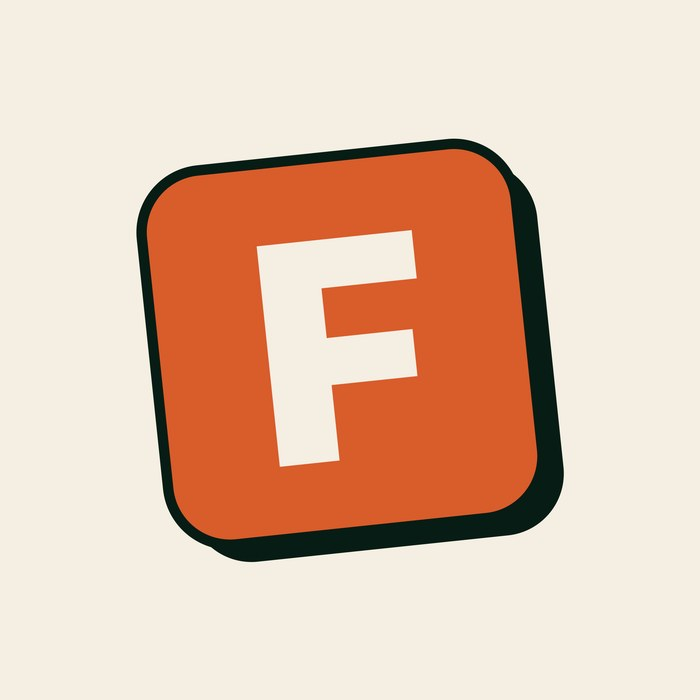
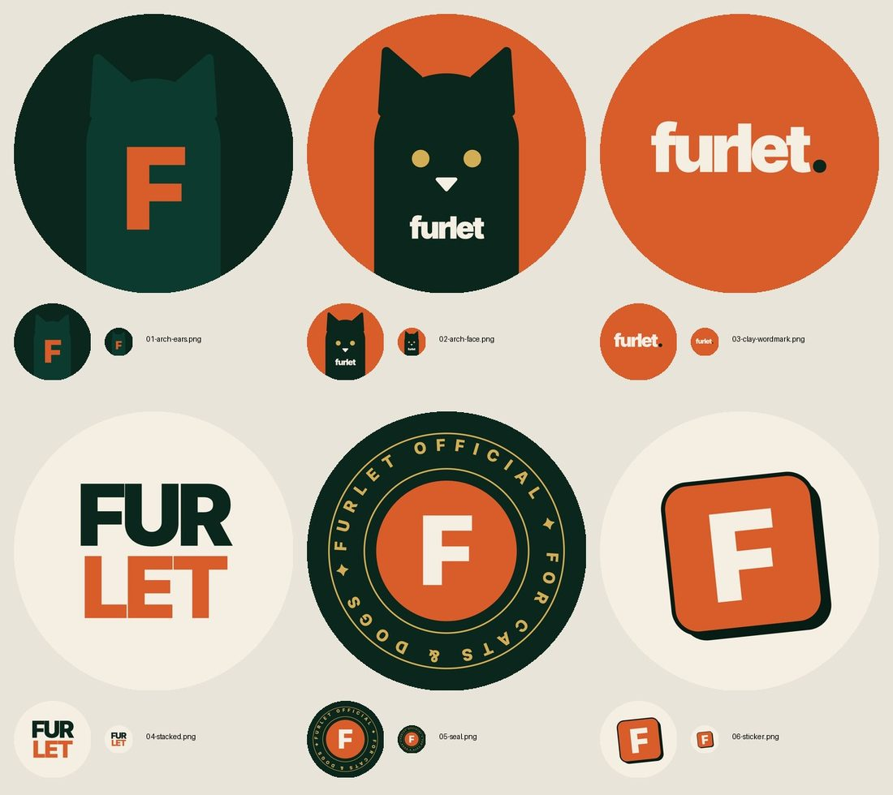
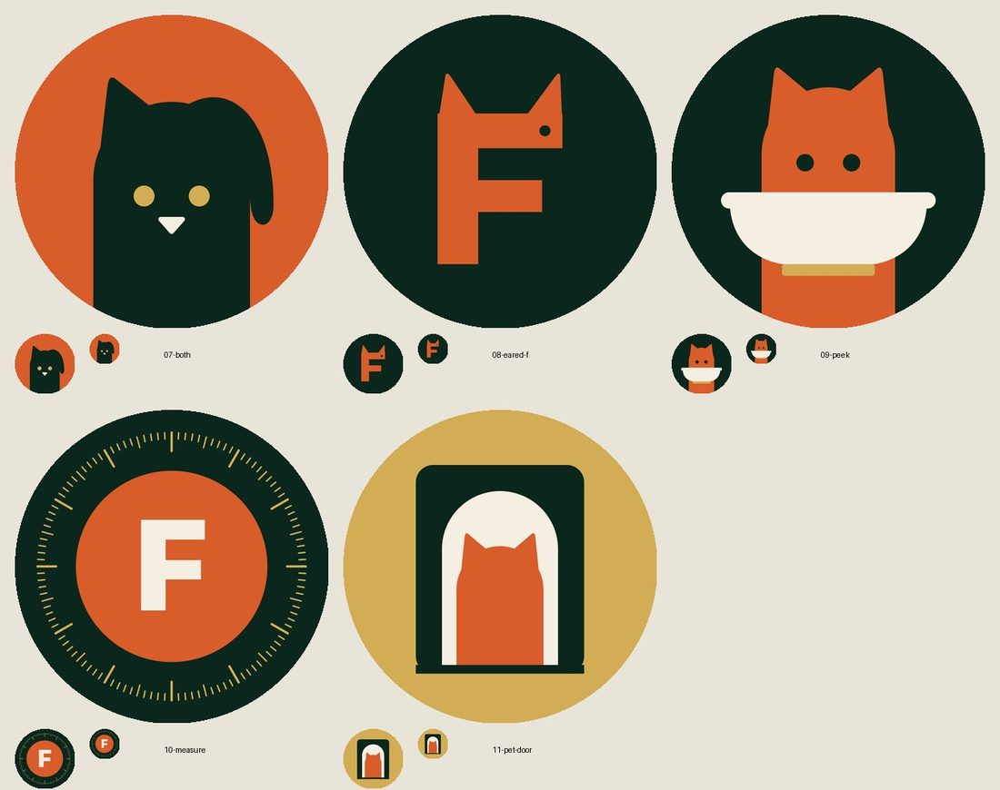

Identity
Eleven marks across two rounds, built on five logo methods from monogram to negative space. The sticker won because it still reads at 32 px in a comment thread.
11 concepts · SVGExports 720 to 2160 px
Inter Tight 800, uppercase



Forest#0B261C
Gold#D3AD55
Cream#F5EEE3
Clay#D95C2B